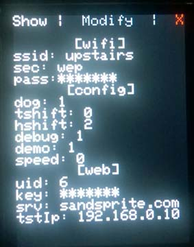
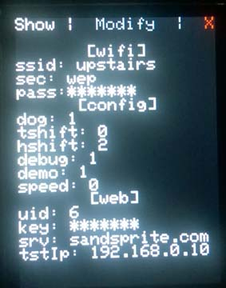
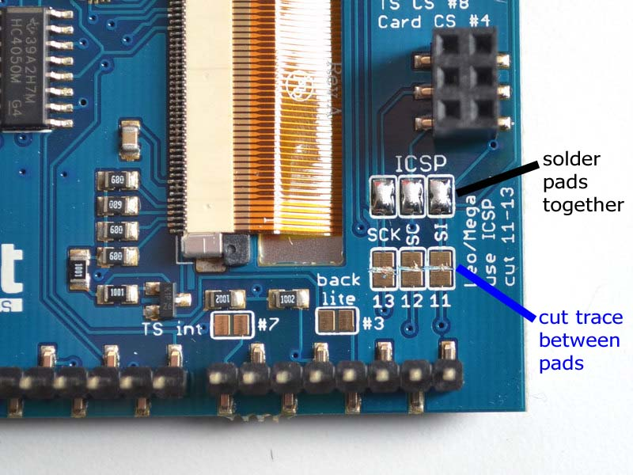
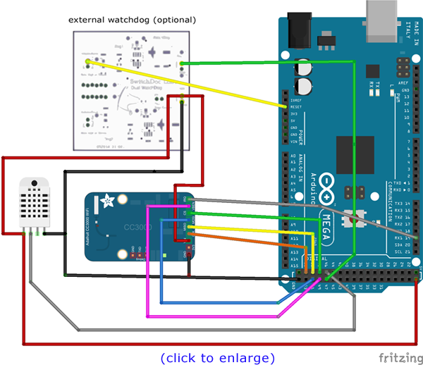
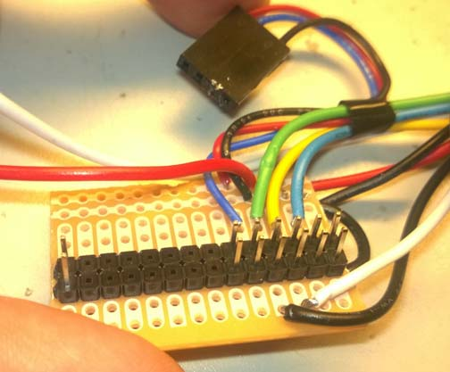
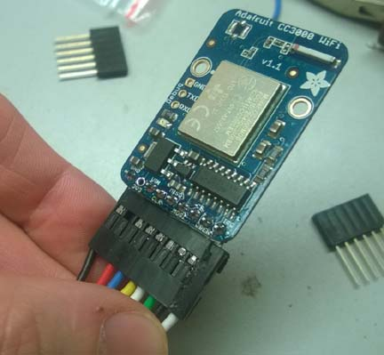

This build was created for the following reasons:
- less soldering, just plug parts together
- do not need to edit source code with user settings
- config settings stored in text file on sd card
- better looking display, more features
- easier to build an enclosure for
this project makes use of 5 main hardware components. There is almost no soldering involved and only 7 wires to plug in. (+4 power and ground connections)
- 2.8 TFT Touch Shield - $45 (with pass through headers $2)
- Temp/Humi Sensor: DHT22 - $10 or Sensiron SHT31-D - $14
- Arduino Mega - $46
- Micro Sd card - $8
- 9v 1 Amp DC center positive power adapter w/ 2.1mm plug - $7 *
- male to female jumpers - $4
I have also prepared a video walk through of the components
The TFT touch shield just plugs right into the mega, it comes fully assembled. I used a set of stacking headers in between just to give myself some more space in the enclosure. This is optional. You will have to solder 3 jumpers pads on the back, and cut 3 traces.

For the temperature / humidity sensor you have two choices. Traditionally I have been using the DHT22 sensor which has accuracy within 5% and costs $10. A new sensor has recently come out, the SHT31, which is about the same price but with a much better accuracy of within 2%. The code will automatically detect which one is present and adjust.Wire the cc3000 breakout as follows: *Connect GND to one of the Arduino GND pins: *Connect Vin to Arduino +5V *CS to Digital 48 *VBAT 49 *MISO to Digital 50 *MOSI to Digital 51 *CLK to Digital 52 *IRQ 19 (changed since pictures taken) The DHT22 sensor requires 3 wires: *Connect GND to one of the Arduino GND pins: *Connect Vin to Arduino +5V *Digital 46 ------ or -------- The SHT31 sensor requires 4 wires: *Connect GND to one of the Arduino GND pins: *Connect Vin to Arduino +5V *SDA to SDA 20 *SCL to SCL 21 The optional external watchdog requires 4 wires: *Connect GND to one of the Arduino GND pins: *Connect Vin to Arduino +5V *Digital 47 *Arduino reset pinIf you use the jumper wires, you can literally just plug the components together. You will only need to solder the header strip onto the wifi board (or cut the female end off of the jumpers and solder those in to the board directly. Its only 8 connections.

Technically you can probably use a CC3000 shield version if you wire it as a breakout, or cut a trace for the pin in conflict and rewire it in place so you can still stack it, but your on your own there!
I decided to solder up a small board to make it more compact. Here is how mine looks:



*Note: the Wifi card requires allot of power, you will get weird bugs and hangs if you use to small of a power supply or one of low quality. If your power supply is to high of a voltage however, it may cause overheating and weird bugs of its own such as resets due to hot glitching.